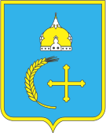
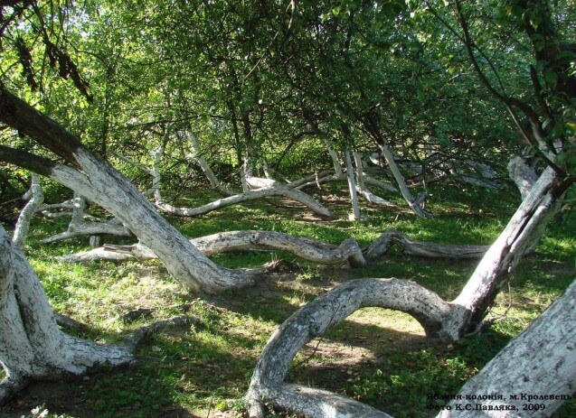
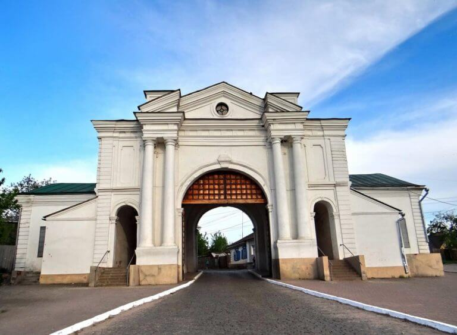

Проект "7 чудес України"

Сумська область


7 історичних міст та містечок
Глухів
7 природних чудес
Яблуня-колонія
"Яблуня-колонія"

На околиці старовинного м. Кролевець Сумської області знаходиться особливий, унікальний об’єкт природно-заповідного фонду України – ботанічна пам’ятка природи загальнодержавного значення “Яблуня-колонія”. Зовні – це яблуневий кущ, орієнтовний вік якого – понад 200 років.
Серед пам’яток природи області „Яблуня-колонія” – найцікавіша. У яблуні давно вже немає її первісного материнського стовбура. Сьогодні на одному з міських майданів, за металевою огорожею, на площі близько 1000 квадратних метрів лежать у різних напрямках 15 прирослих до землі стовбурів – її дітей чи онуків, а, може, правнуків та прапра… Загубився початок цього життя десь у сивій давнині.
Неперевершеною, ніде більш незнаною особливістю яблуні є її здатність до самостійного укорінення гілками, а значить – до продовження життя. Коли один з прирослих до землі стовбурів має відмерти, його віти стрімко нахиляються до землі і теж приростають. Набравшись сил, вже не віти, а деревця піднімаються знову догори, рясно вкриваючись цвітом навесні та червоно-білими, приємними на смак яблуками восени.
Завдяки таким своїм особливостям увійшла диво-яблуня до історії садівництва. Наведемо одну з двох згадок про неї в четвертому томі творів І.В. Мічуріна, що вийшов 1948 року. Це його лист до офіційних місцевих інстанцій:
“Райземуправлению, райагроному.
Союз технических культур, старшему агроному.
г. Кролевец, УССР.
Джерело:7 чудес України. Яблуня-колонія
Нагору
Місто "Глухів"

Ще за часів Русі Глухів був добре укріпленим поселенням Чернігівського князівства, а перша згадка датована 1159 роком, хоча непрямі джерела свідчать, що місто існувало ще у 992 році. Через Глухів проходив важливий торговий шлях, який пізніше з’єднав Москву та Київ.
За козацької доби тут розташовувалося сотенне містечко Ніжинського полку, яке з 1708 року по 1764 рік було столицею Гетьманщини. З козацької доби частково уціліла фортеця із мурованою Київською брамою, а також Радний майдан, Миколаївська та Вознесенська церкви. Пройшовши вузенькими вуличками, можна вийти до Тріумфальної арки, розташованої на Києво-Московській вулиці. Ця пам’ятка архітектури позначає стару межу міста та знаходиться на верхівці оборонного валу козацьких часів.
Мурована споруда розташована на західному краю історичного середмістя над заплавою р. Есмань. Протягом ХVІІ- ХVІІІ ст. була важливим елементом фортифікаційної системи Глухова. Муровану фортечну браму з кордегардіями збудовано в 1766-1769 рр. під загальним наглядом архітектора Андрія Квасова на місці однойменної дерев’яної брами. 1804 р. за проектом чернігівського губернського архітектора Антона Карташевського замість старих кордергардій прибудовано обабіч арки-проходи для пішоходів та великі прямокутні в плані кордегардії.
Загальне стилістичне вирішення – у формах, перехідних від барокко до раннього класицизму.Київська брама є рідкісним зразком оборонного зодчества ХVІІІ ст., що уцілів дотепер.
Джерело:7 чудес України. Глухів
Нагору
Сторінку створив Наконечний Артем